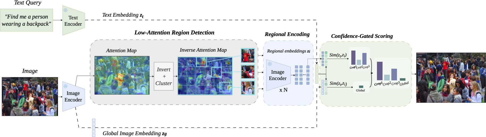
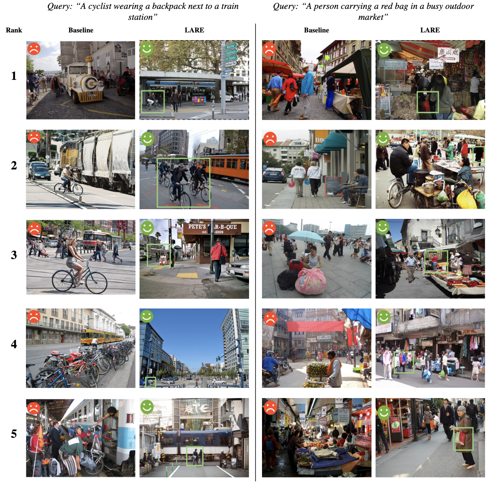

Image retrieval in crowded scenes is particularly challenging due to the salience bias of conventional visual encoders, which tend to focus on dominant objects while neglecting low-attention regions that are often crucial for fine-grained retrieval. We propose LARE (Low-Attention Region Encoding), a framework that explicitly models these overlooked regions. LARE adopts a dual-encoding strategy that encodes low-attention regions of an image and the full image in parallel, leading to more diverse and informative image embeddings.
To evaluate image retrieval performance in challenging crowded scenes, we introduce Dense-Set, a challenging subset derived from MS-COCO and Flickr30k. In this subset, images are re-captioned to provide richer descriptions of low-attention or previously overlooked regions. Experimental results demonstrate that the proposed framework improves retrieval performance by preserving subtle, non-dominant visual cues within the shared latent space.
We introduce Dense-Set, a curated evaluation benchmark derived from MS-COCO and Flickr30k, designed to stress-test retrieval models in visually crowded scenes. Images are selected for high object density and the presence of rare single-instance object categories, then re-captioned using BLIP-2 to highlight these overlooked regions.
Images ranked by total detected object count (YOLO); the top 10% are retained as the high-density subset.
Images containing at least one single-instance object category are kept, focusing on visually subordinate objects.
BLIP-2 generates new captions guided by class-aware prompts, shifting focus from global scene context to fine-grained details.
Dense-Set exposes the salience bias of global embeddings that standard benchmarks fail to reveal.
Zero-shot retrieval performance (Recall@1/5/10). LARE is applied on top of CLIP, SigLIP, and SigLIP 2 — no additional training or fine-tuning required.
| Model | MS-COCO | Flickr30k | MS-COCO-Dense | Flickr30k-Dense | ||||||||
|---|---|---|---|---|---|---|---|---|---|---|---|---|
| R@1 | R@5 | R@10 | R@1 | R@5 | R@10 | R@1 | R@5 | R@10 | R@1 | R@5 | R@10 | |
| CLIP (L/14) | 36.10 | 61.10 | 71.44 | 65.00 | 88.00 | 92.62 | 17.79 | 35.85 | 45.11 | 3.48 | 11.97 | 16.33 |
| SigLIP (So/14) | 54.24 | 76.78 | 84.21 | 82.94 | 96.08 | 98.00 | 26.61 | 46.31 | 55.22 | 5.05 | 15.50 | 20.96 |
| SigLIP 2 (So/16) | 56.55 | 78.75 | 85.95 | 83.72 | 96.34 | 98.32 | 27.56 | 47.56 | 56.73 | 5.12 | 16.47 | 21.80 |
| LARE (CLIP) | 36.10 | 61.10 | 71.44 | 65.00 | 88.00 | 92.62 | 22.97 | 42.10 | 52.03 | 9.73 | 16.63 | 20.40 |
| LARE (SigLIP) | 54.26 | 76.80 | 84.24 | 82.94 | 96.12 | 98.00 | 29.94 | 50.17 | 59.26 | 12.33 | 19.87 | 24.10 |
| LARE (SigLIP 2) | 56.56 | 78.78 | 85.97 | 83.76 | 96.38 | 98.34 | 31.00 | 51.45 | 60.67 | 13.28 | 21.11 | 25.10 |
Highlighted rows (LARE) consistently improve Dense-Set performance while preserving standard benchmark scores.

@inproceedings{alquwayfili2026lare,
title={LARE: Low-Attention Region Encoding for Text--Image Retrieval},
author={Abdulmalik Alquwayfili and Faisal Almeshal and Jumanah Almajnouni and Leena Alotaibi and Huda Alamri and Muhammad Kamran J Khan},
booktitle={Proceedings of the IEEE/CVF Conference on Computer Vision and Pattern Recognition Workshops (CVPRW)},
year={2026}
}